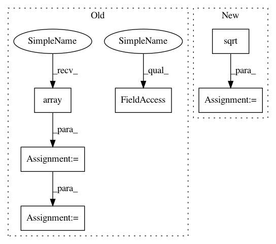

6704c535b8c59ab3b9b98c0489a051654c1ee727,nisl/signals.py,,_standardize,#Any#Any#Any#,12
Before Change
=======
std_signals: copy of signals, normalized.
signals = np.array(signals).astype(np.float)
buf = signals.T
buf -= signals.mean(axis=-1)
if normalize:
length = float(signals.shape[-1])
std = np.sqrt(length) * signals.std(axis=-1).T
std[std < np.finfo(np.float).eps] = 1
buf /= std
return signals
After Change
if not detrend:
signals -= signals.mean(axis=0)
std = np.sqrt((signals ** 2).sum(axis=0))
std[std < np.finfo(np.float).eps] = 1. // avoid numerical problems
signals /= std
return signals
In pattern: SUPERPATTERN
Frequency: 3
Non-data size: 6
Instances
Project Name: nilearn/nilearn
Commit Name: 6704c535b8c59ab3b9b98c0489a051654c1ee727
Time: 2013-04-05
Author: philippe.gervais@inria.fr
File Name: nisl/signals.py
Class Name:
Method Name: _standardize
Project Name: nipy/dipy
Commit Name: 0cdade2e4c3a5b946e82b366efd4e778bcd96e82
Time: 2017-06-20
Author: arokem@gmail.com
File Name: doc/examples/denoise_localpca.py
Class Name:
Method Name:
Project Name: nilearn/nilearn
Commit Name: 6704c535b8c59ab3b9b98c0489a051654c1ee727
Time: 2013-04-05
Author: philippe.gervais@inria.fr
File Name: nisl/signals.py
Class Name:
Method Name: _standardize
Project Name: tensorpack/tensorpack
Commit Name: 141ab53cc37dce728802803747584fc0fb82863b
Time: 2019-05-28
Author: ppwwyyxx@users.noreply.github.com
File Name: examples/FasterRCNN/data.py
Class Name:
Method Name: get_all_anchors